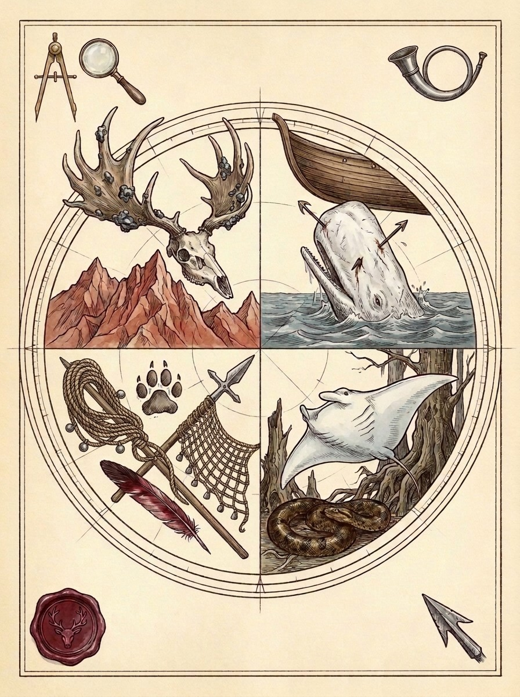
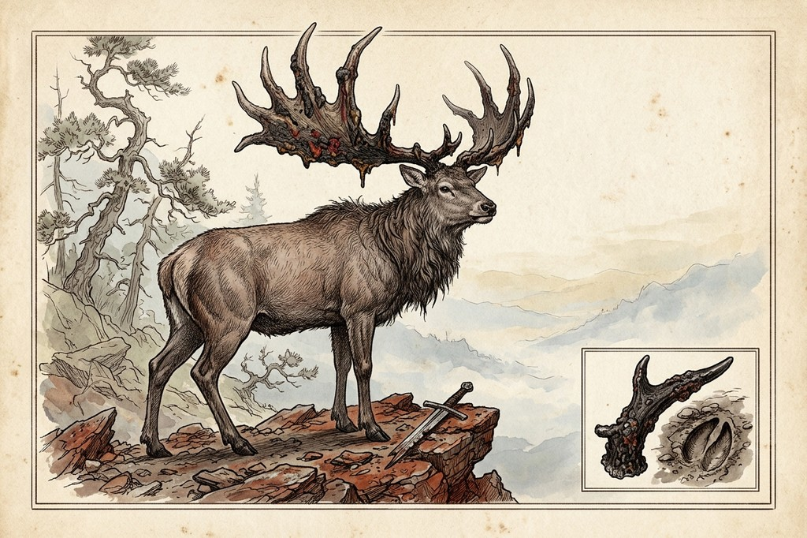
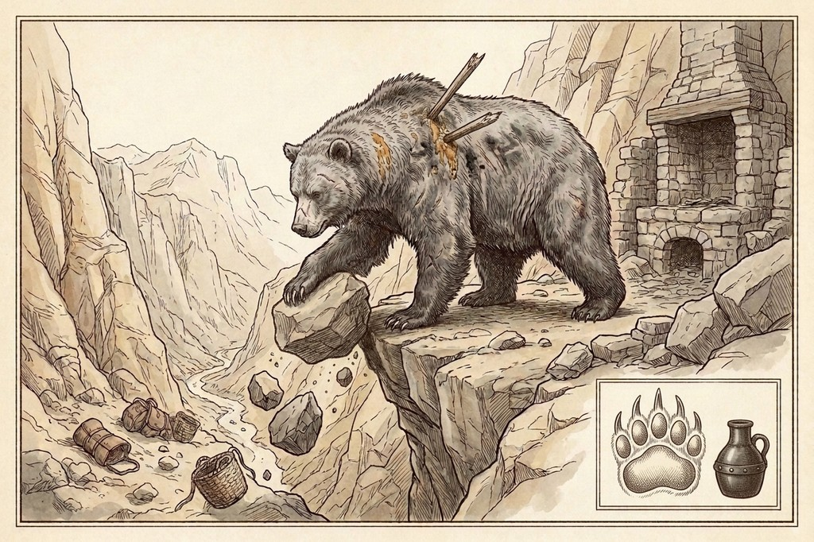
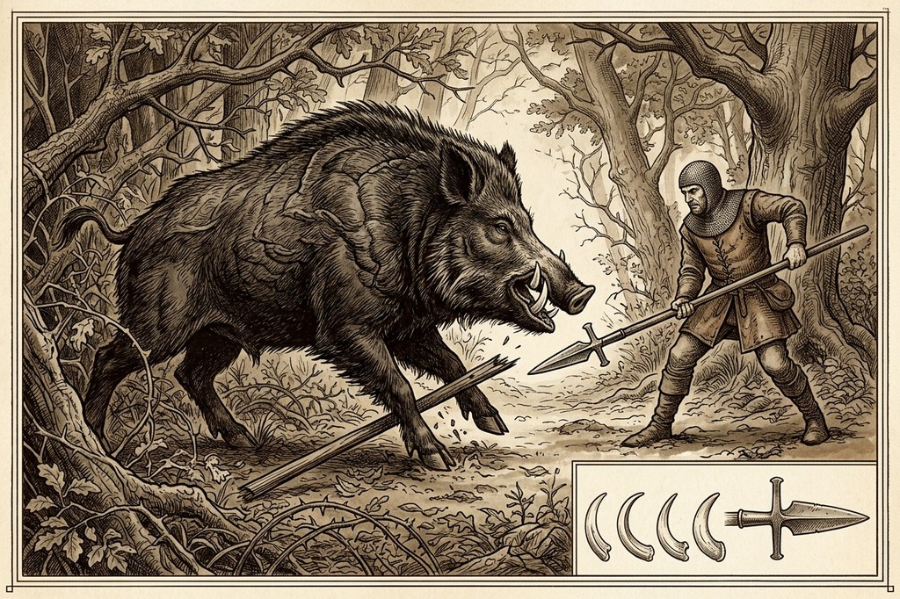
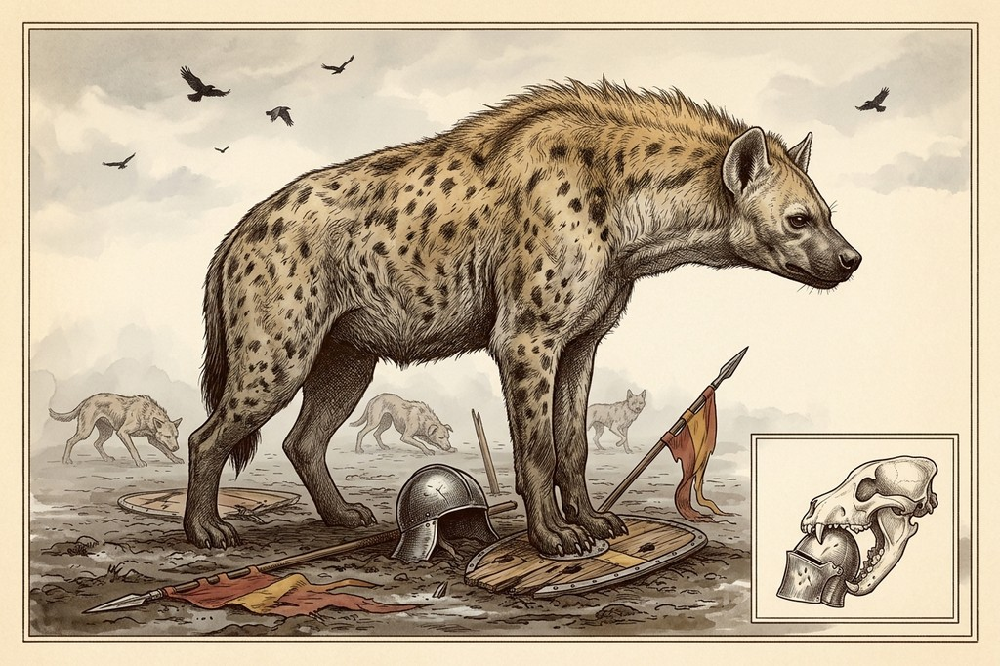
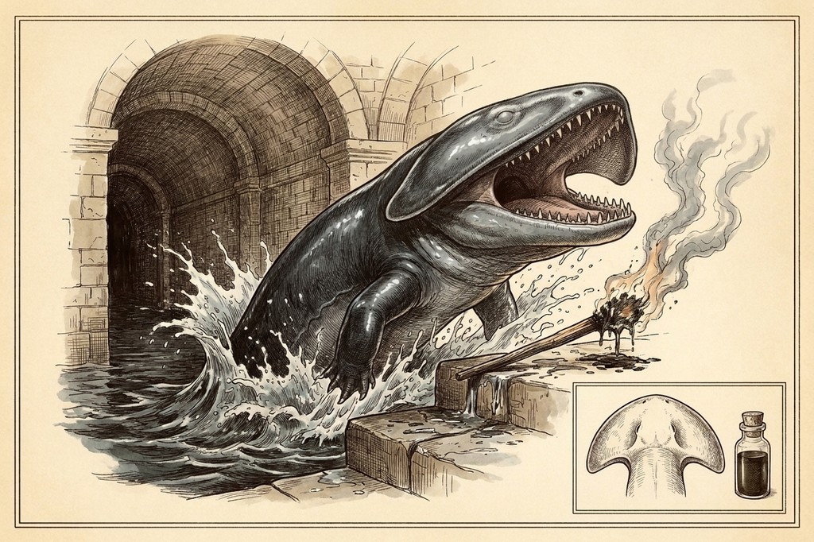

Colossos, Presságios e Caças Lendárias
Doze soberanos animais absolutamente únicos, solitários e astutos, com gravuras exclusivas, fichas auditadas, táticas de rastreio e troféus políticos.
“Os bichos comuns correm da tocha e caem na primeira cova; estes doze sobreviveram aos reis que puseram preço nas suas cabeças porque aprenderam o cheiro do ferro, o alcance de uma besta e a pressa tola dos homens.”
🏹 Regras das Três Fases de Caçada, Lança c/ Travessa, Redes Lastradas, Extração & Peso Político
A arte da grande caçada: rastreio, iscas, contenção e troféus
Em um mundo humano de baixa fantasia sem bolas de fogo nem armas mágicas banais, marchar de peito aberto para dentro do território de um colosso de meia tonelada (ou de um cachalote de vinte metros) é pedir para virar estrofe triste em taverna. Toda expedição contra um exemplar X01–X12 funciona como uma aventura investigativa e tática em três fases:
1. Fase I — Estudo de Hábitos, Batedores e Rastreamento (Pré-Confronto)
Antes de cruzar espadas ou disparar arpões, o grupo realiza até três ações preparatórias na comarca:
| Etapa de Preparação | Perícias Principais & Apoios | Efeito Prático no Confronto |
|---|---|---|
| 1. Separar Boato de Verdade | Investigação, História ou Persuasão (CD 14–16) junto a pastores, pescadores (N090), caçadores de Altrax (L06) ou herbários (N032). | Revela 1 Hábito de Astúcia real da criatura (evitando cair na emboscada favorita dela na 1ª rodada!) e aponta o território correto. |
| 2. Ler o Rastro Vivo | Sobrevivência ou Navegação (CD específica de cada ficha, de 16 a 20), somando +2 com cães treinados, luneta (Tomo IX) ou guia nativo. | Permite escolher a hora e a distância inicial do encontro. Falhar por 5+ significa que o Soberano notou os caçadores primeiro e ataca com surpresa ou vantagem de terreno! |
| 3. Preparar Isca & Camuflagem de Cheiro | Herbalismo, Alquimia ou Culinária/Sobrevivência (CD 15–18), combinando carnes (A01–A26), sal de Bayd e ervas (H01–H64). | Atrai o animal exatamente para o ponto preparado (fosso, canal raso, clareira sem rota de carga) ou impõe -2 na Percepção dele contra a emboscada. |
2. Fase II — O Armamento Certo e a Regra do Terreno Preparado
Nenhum dos Soberanos cai apenas na força bruta; cada um possui uma contramedida física realista sem a qual o grupo luta em desvantagem severa:
- Lança de Contenção com Travessa (Lança de Javali / Boar Spear —
12 PP,2,8 kg): haste grossa de freixo reforçada com tiras de couro e uma barra transversal de ferro forjado logo abaixo da lâmina larga (1d8 + FOR,20/×3, Duas Mãos, Alcance3m). Quando firmada no chão com Preparar Ação contra uma criatura em investida, causa dano dobrado, ignora até4pontos deRD Naturalfrontal da fera investindo e impede que um animal empalado avance pela haste até alcançar o caçador! - Rede Lastrada de Caça Pesada (
18 PP,6,0 kg): malha grossa de cânhamo encerado com pesos de chumbo/ferro nas bordas (lançada por2pessoas ou engenho leve até6m). Prende membros ou asas de criaturas Grandes (Atletismo CD 18para rasgar; cordas de seda trançada elevam paraCD 20), reduzindo seu deslocamento à metade e anulando Voo ou Investida! - Fosso Estacado, Abatis e Estreito de Pedra (
EngenhariaouSobrevivência CD 15,4 horascom pás/machadinhas): reduz aEsquivade quadrúpedes pesados em-4por2 rodadas, causa3d6perfurante na queda e suspende sua habilidade de Investida. - Artilharia Naval Sem Pólvora (
Tomo XIV): no mar, enfrentarX07ouX08sem Balista Naval de Fisgada (M09), barris-boia estanques (que impedem o colosso de submergir livremente!) e machados prontos no cabrestante condena o casco ao fundo.
Criaturas lendárias chegaram à velhice porque sabem quando uma emboscada virou contra elas. A menos que esteja encurralado no covil, preso por arpões/redes ou cego de fúria (como no Último Arranco de
X04), um Soberano reduzido abaixo da condição de fuga usa o terreno para escapar, lembrando o cheiro e a tática do grupo caso haja uma segunda caçada!3. Fase III — Desmanche, Ofícios Obra-Prima e Peso Político
Abater (ou proteger/capturar) um exemplar único gera três recompensas concretas que respeitam rigorosamente a matemática do Tomo I:
- Extração Delicada (
Hora de Ouro): couros inteiriços, glândulas neurotóxicas e óleo craniano exigem teste de Sobrevivência, Medicina ou Alquimia na primeira hora após o abate (Faca de Esfolarconcede+2; Instrumentos de Baldbella concedem+2em glândulas). Falhar por5+reduz o valor material pela metade, mas jamais apaga a glória política do feito. - Ofícios Únicos Sem Quebrar a "Zero RD Pessoal": conforme a regra áurea de Alenia, armaduras pessoais vestidas por humanos concedem Defesa e nunca RD passiva; assim, couros lendários rendem armaduras Obra-Prima sem penalidade de DES, imunidades situacionais (a sangramento, ácido ou agarrão) e bônus de prestígio social, enquanto placas calcificadas ou galhadas minerais aplicadas em escudos pavêses, proas navais (
Tomo XIV) ou portões de castelo (Tomo XV) elevam o Limiar Estrutural (LE)! - Moeda Diplomática entre Feudos e Regências (
Tomo XVI & XVII): cada troféu possui compradores e pretendentes políticos específicos nos 22 Feudos (L01–L22) — entregar a cabeça, o óleo ou o presente vivo ao Senhor Feudal certo vale mais do que sacos de ouro: paga dívidas de sangue, garante uma Carta de Concessão (F04–F07) e cumpre o critério de Ato Concreto + Testemunho para subir de grau emStatus(S02aS04)!
Terras interiores, matas e montanhas
O Cervo-de-Escória (Galhada-de-Ferro)

Um alce macho descomunal, último patriarca gigante de uma linhagem anterior à Era da Forja, com quase dois metros e quarenta na cernelha e uma galhada espalmada de quase três metros de largura. Ao esfregar os chifres durante quarenta invernos contra afloramentos de hematita oxidada, escória de forjas abandonadas e resina grossa de pinheiro-bravo, sua armação ganhou uma crosta mineral escura e vítrea onde espadas comuns resvalam soltando faíscas. Diferente dos cervos menores reverenciados nas matas do nordeste, o Cervo-de-Escória vaga absolutamente só pelas cristas ventosas do sul; já virou uma carroça de pedágio inteira de Vaarsa e matou três cavaleiros impetuosos que tentaram laçá-lo a galope.
- PV:
118(Golpe Devastador:79+dano;+4em CON) | Iniciativa:+5| Deslocamento:15m(ignora terreno pedregoso e encostas íngremes) - Atributos:
FOR 20 (+5),DES 16 (+3),CON 19 (+4),INT 5 (-3),SAB 17 (+3),CAR 14 (+2) - Defesa: Aparar
25(bloqueando pela frente com a galhada mineral) / Esquiva20/ Desprevenido14(Couro e Crosta Ferruginosa+4, Especialista+8Aparar frontal, Treinado+3Esquiva) | RD Especial:3na cabeça e espáduas (ignorada por armas contundentes pesadas de duas mãos, Lança de Contenção com Travessa preparada, Adamante ou ataques nos flancos quando enredado/caído). - Ataques:
- Galhada de Escória (Alcance 3m):
+13(2d10 + 5,19–20 / ×3, Especialista+8+ FOR+5; Múltiplas Ações: até 2 varridas com+5cada). Lâminas em Risco: qualquer arma cortante comum que role1natural ao atacar sua frente lasca na crosta mineral (-1no dano até ser amolada). - Investida Vira-Carroças (
9m+em linha reta):+15(2d10 + 2d6 + 5contundente/perfurante; arremessa alvos Médios ou Grandes a4,5m, exigindo Atletismo CD 19 para não cair Derrubado e perder a reação; causa dano triplo a carroças, paliçadas leves e escudos de madeira comum). - Cascos Oxidados:
+10(2d6 + 5,20 / ×2, contra alvos caídos ou adjacentes aos flancos).
- Galhada de Escória (Alcance 3m):
- Astúcia de Soberano: jamais pasta a favor do vento (
Percepção +11contra cheiro de óleo de armadura, cavalos suados e fumaça); quando percebe batedores montados, finge mancar de uma pata traseira para atrair os ginetes até encostas de xisto solto onde cavalos escorregam (Cavalgar CD 17), dando meia-volta morro abaixo com força total! - Preparação, Isca & Ponto Fraco: atraído por blocos de Sal Grosso de Bayd (
Tomo IX) umedecidos com mosto fermentado e brotos amargos de Flor-de-pedra (H16); conduzi-lo a um desfiladeiro estreito com menos de3mde largura ou prendê-lo com Rede Lastrada impede que gire a galhada (perde o bônus Especialista de Aparar, caindo para Defesa 17). - Troféu Único, Ofícios & Peso Político:
- Extração (
Sobrevivência + Forja CD 16): A Grande Galhada de Escória (38 kg, valor base1.800 PP) + couro invernal (300 PP). - Ofício Único: um mestre armeiro (
G10) pode seccionar as pás minerais para forjar dois Escudos Pavêses de Escória (Defesa +3, imunes a estilhaçamento crítico e concedendo+2extra ao usar Proteger Aliado contra investidas) ou cravar a armação inteira sobre o portão de uma fortaleza (F04–F08), somando+1permanente ao Limiar Estrutural (LE) do portão e+1na Moral da guarnição! - Política & Status: caçá-lo vivo ou morto é considerado em Altavanne (
L01), Dahrma/Lavroga (L03) e Vaarsa (L04) um Feito Supremo de Cavalaria e Nobreza (qualifica diretamente para progressão atéStatus S03).
- Extração (
O Urso-das-Cinzas (Velho Kragh)

Mais que o dobro da massa de um urso pardo comum de Rubecina, o Velho Kragh carrega nos ombros pontas enferrujadas de lanças gaddrani e virotes aurorianos de trinta anos atrás, soldados uns aos outros por uma couraça natural de resina de cedro, seiva seca e fuligem negra das antigas fornalhas de montanha onde hiberna. Nenhum caravaneiro veterano da Rota do Sal o chama de besta irracional: Kragh aprendeu há décadas que descer ao encontro de escoltas armadas dói — por isso espera no alto dos paredões e rola blocos de rocha sobre as mulas de carga, aguardando pacientemente que os guardas fujam em pânico para descer e se banquetear em paz.
- PV:
148(Golpe Devastador:99+dano;+5em CON) | Iniciativa:+3| Deslocamento:10,5m(Escalada em rocha7,5m) - Atributos:
FOR 22 (+6),DES 12 (+1),CON 20 (+5),INT 6 (-2),SAB 16 (+3),CAR 10 (0) - Defesa: Aparar
16/ Esquiva19/ Desprevenido15(Pelagem Endurecida de Seiva e Fuligem+5, Treinado+3Esquiva) | RD Especial:3(crosta de fuligem e gordura densa; sofre apenas metade do dano de fogo comum, pois o pelo empastado de cinza mineral não pega chama fácil — mas Lanças de Contenção com Travessa e disparos perfurantes pesados contra o peito quando se ergue nas patas traseiras ignoram a RD!). - Ataques:
- Patada Demolidora:
+14(2d10 + 6,20 / ×3, Especialista+8+ FOR+6; Múltiplas Ações: até 2 patadas com+6cada; alvo atingido faz Atletismo CD 20 ou cai Derrubado). - Abraço Quebra-Espinha (contra alvo Derrubado ou atingido pelas 2 patadas no mesmo turno):
+14(2d12 + 6contundente, esmagando costelas). - Desmoronamento Deliberado (Ação Principal no alto de escarpa, alcance
24m, área6m × 6m, até2×por cena): alavanca pedras soltas sobre o desfiladeiro — criaturas na área fazem DES/Acrobacia CD 17 para sofrer metade de4d8contundente, transformando o trecho em terreno difícil.
- Patada Demolidora:
- Astúcia de Soberano: fareja venenos alquímicos e carne podre (
Percepção +11), contorna fossos cavados em trilha batida e sempre bloqueia com pedras a entrada secundária de sua caverna antes de dormir. Se perder mais de90 PVfora do covil, derruba uma parede de cascalho para cegar perseguidores e recua pelas escarpas. - Preparação, Isca & Ponto Fraco: tomar silenciosamente a crista acima dele antes da alvorada (
Escalada CD 16) anula seu Desmoronamento; a única isca à qual o Velho Kragh não resiste no outono é gordura quente assada com mel silvestre e Cordeiro das Escarpas temperado sem ferro (Tomo XII,CD 15). - Troféu Único, Ofícios & Peso Político:
- Extração (
Sobrevivência + Alquimia/Forja CD 16): Seis Cântaros de Banha Cinzenta de Kragh + Manto Craniano Cravejado de Pontas Antigas (valor total 2.200 PP). - Ofício Único — A Têmpera de Kragh: os mestres armeiros de Gaddra e Aeraneas têm razão — temperar aço rubro na banha filtrada de Kragh (
Forja CD 18) produz até6Armas de Têmpera Cinzenta (+1permanente nas rolagens de dano, imunes a quebra por frio extremo e capazes de ignorar1ponto deRDouLEsem precisar de adamante!). - Política & Status: apresentar o crânio de Kragh em Vargheim (
L17) ou Naasar (L14) reabre negociações travadas no Passo de Rubecina (Z07) e concede feito válido paraStatus S03.
- Extração (
A Sombra-Salobra (Leão-da-Restinga Albino)

Esguio, comprido, inteiramente desprovido de juba e revestido por uma pelagem curta cor de osso calcinado, com olhos de âmbar pálido que não refletem tochas distantes. Enquanto o norte de Kalis é tomado por pinheiros escuros e neve, os baixios calcários e desertos de sal marinho da costa oeste-sul criaram este predador fantasma. A Sombra-Salobra jamais ruge: espera o vento erguer cortinas brancas de pó salino ao meio-dia (quando o reflexo cega os vigias e o peso da cota de malha exaure patrulhas humanas) para surgir rente ao chão, cravar os caninos nos tornozelos do último sentinela da fila e arrastá-lo para um cânion estreito antes que o homem à frente perceba que está falando sozinho. Nos quartéis de Kalgard e Kalima, recrutas juram tratar-se do espírito faminto de desertores executados pelo Véu.
- PV:
96(Golpe Devastador:65+dano) | Iniciativa:+8| Deslocamento:15m(Salto horizontal9msem embalo) - Atributos:
FOR 18 (+4),DES 20 (+5),CON 16 (+3),INT 6 (-2),SAB 17 (+3),CAR 12 (+1) - Defesa: Aparar
17/ Esquiva25/ Desprevenido12(Couro Esguio+2, Especialista+8Esquiva) | RD Especial:0 - Ataques:
- Bote Muda-Grito nos Tendões:
+13(2d8 + 4,18–20 / ×2, Especialista+8+ DES+5Ágil; Múltiplas Ações: até 2 ataques com+5cada). Arrasto na Poeira Branca: contra alvo surpreso, ofuscado pelo reflexo/poeira ou isolado a mais de4,5mde aliados, soma+2d6de dano, corta o equilíbrio (Atletismo/CON CD 18 ou cai Derrubado com deslocamento reduzido a1,5maté receber suturaMedicina CD 14) e arrasta a presa6mconsigo sem provocar reação!
- Bote Muda-Grito nos Tendões:
- Astúcia de Soberano: possui
Furtividade +15em salares, calcário claro, neblina seca e tempestades de poeira; entende o funcionamento de rondas militares (observa por dois dias o horário exato de troca das sentinelas antes de atacar), enterra suas carcaças sob cascalho salgado para que abutres não entreguem seu covil e abandona imediatamente o ataque se notar besteiros amarrados em dupla! - Preparação, Isca & Ponto Fraco: espelhos de aço polido ou óculos escuros de vidro temperado de Fugong (
L22,N085) anulam o ofuscamento do salar; amarrar um manequim de armadura com sino oculto e pó colorido de tinturaria marca a pelagem branca da fera, reduzindo sua Furtividade em-8pelo resto da caçada! - Troféu Único, Ofícios & Peso Político:
- Extração (
Sobrevivência CD 17comFaca de Esfolar): Pele Intacta da Sombra-Salobra + caninos silenciosos (1.600 PP). - Ofício Único: curtida por mestre artesão, confecciona o Gibão-Manto Cor-de-Osso (
Defesa +2, Penalidade0, peso2,0 kg, concede+2em Furtividade em terrenos claros/neve/pedra/neblina e+2contra Exaustão por vento seco e reflexo solar). - Política & Status: pôr fim ao terror dos quartéis costeiros rende recompensa oficial do Déspota Grimrik Ulscold (
L18) ou de Torvald von Kragstad (L19), destravando salvo-conduto em Kalis e feito paraStatus S02→S03.
- Extração (
Javali-de-Muralha (Quebra-Piques)

Um varrão monstruoso de quase quinhentos quilos, dorso negro eriçado e quatro presas inferiores recurvadas do tamanho de foices curtas. Décadas de brigas territoriais e velhice calcificaram sobre seus ombros e pescoço uma placa cartilaginosa natural de quatro dedos de espessura, onde flechas comuns ricocheteiam como gravetos. Ganhou o apelido de Quebra-Piques há seis anos, quando uma batida senhorial de doze batedores tentou cercá-lo com lanças de infantaria sem travessa: empalado por duas hastes, o monstro simplesmente correu para a frente empurrando a madeira pelo próprio corpo até estripar três cavalos de guerra e dispersar toda a comitiva.
- PV:
132(Golpe Devastador:89+dano;+5em CON) | Iniciativa:+3| Deslocamento:12m(ignora mata densa e espinheiros) - Atributos:
FOR 21 (+5),DES 13 (+1),CON 20 (+5),INT 5 (-3),SAB 15 (+2),CAR 8 (-1) - Defesa: Aparar
16/ Esquiva19/ Desprevenido15(Placa Cartilaginosa de Ombro+5, Treinado+3Esquiva) | RD Especial:4contra ataques frontais e projéteis comuns (completamente ignorada por Lanças de Contenção com Travessa [Boar Spears], quedas em Fosso Estacado ou lâminas de Adamante). - Ataques:
- Quatro Presas Estripadoras:
+13(2d10 + 5,19–20 / ×3, Especialista+8+ FOR+5+ Sangramento Profundo1d6/rodadaaté estancar com Medicina CD 15). - Aríete Vivo (
6m+de corrida): avança em linha reta sobre até3quadrados ocupados — cada alvo na linha testa Atletismo ou Aparar CD 19; quem falhar sofre3d8 + 5perfurante/contundente e cai Derrubado (montarias sofrem+2d8extra e jogam o cavaleiro ao chão!). Regra da Haste Sem Travessa: quem preparou lança comum sem barra transversal acerta o golpe, mas o varrão avança pela haste e desfere1ataque gratuito de presas contra o lanceiro!
- Quatro Presas Estripadoras:
- Habilidade — Último Arranco Implacável: ao ser reduzido a
0 PV(salvo se estiver caído num fosso fundo ou preso em rede pesada), o Quebra-Piques não cai imediatamente — avança até6me executa 1 último ataque de presas antes de morrer! - Astúcia de Soberano ("O Gancho do Varrão"): quando perseguido por cães e caçadores numa trilha fechada, corre em linha reta fazendo barulho, depois descreve um semicírculo mudo pelo mato fechado e fica imóvel atrás da linha de perseguidores, estripando pelas costas os arqueiros e nobres da retaguarda!
- Preparação, Isca & Ponto Fraco: cavar Fosso Pesado Camuflado num corredor de carvalhos com bolotas fermentadas e raízes doces (
B01–B06do Tomo XII) + dupla fila de Lanças de Contenção com Travessa apoiadas em troncos corta pela raiz sua investida. - Troféu Único, Ofícios & Peso Político:
- Extração (
Sobrevivência CD 15): Placa Dorsal de Muralha, as Quatro Presas Reais e carne nobre para um banquete histórico de50convivas (valor total 1.500 PP). - Ofício Único: a placa cartilaginosa curtida em alúmen rende a Couraça do Quebra-Piques (
Defesa +3, reduz a penalidade de armadura para apenas-1, concede+3contra ser Derrubado/Empurrado e anula Sangramento causado por acertos críticos inimigos). - Política & Status: oferecer o Banquete do Javali-de-Muralha num solar de Dahrma (
L03) ou Altavanne (L01) concede+3em negociações diplomáticas naquela ocasião e consagra o caçador comStatus S02→S03.
- Extração (
O Cão-Rei de Carniça (Soberano Pachycrocuta)

Maior que um cavalo pônei de montanha, de quartos dianteiros altíssimos, pescoço grosso como tronco de oliveira e pelagem malhada cor de barro seco coberta de cicatrizes antigas. Último remanescente vivo das hienas-gigantes ancestrais (Pachycrocuta), O Cão-Rei de Carniça domina pelo terror matilhas mistas de Hienas-de-Sal e cães de guerra asselvajados. Suas mandíbulas possuem alavanca óssea suficiente para estilhaçar fêmures de boi e dobrar elmos de ferro batido numa única mordida. Na crendice dos soldados de Aurora e Gaddra, ouvir sua "risada" grave e cadenciada na véspera de uma batalha anuncia qual estandarte será pisoteado na lama no dia seguinte.
- PV:
108(Golpe Devastador:73+dano) | Iniciativa:+5| Deslocamento:13,5m - Atributos:
FOR 19 (+4),DES 16 (+3),CON 18 (+4),INT 6 (-2),SAB 17 (+3),CAR 13 (+1) - Defesa: Aparar
15/ Esquiva23/ Desprevenido12(Couro Grosso Cicatrizado+2, Especialista+8Esquiva) | RD Especial:1(couro calejado) - Ataques:
- Mandíbula Quebra-Elmos:
+12(2d10 + 4,19–20 / ×3, Especialista+8+ FOR+4; Múltiplas Ações: até 2 mordidas com+4cada; soma+2no acerto contra alvos caídos ou com Exaustão). Estilhaçar Ferro: sempre que acertar por5+acima da Defesa ou obtiver crítico, amassa a proteção da vítima, reduzindo em-1o bônus da armadura ou escudo comum (até reparo de forja) e exigindo Atletismo CD 18 para não cair Derrubado! - Risada do Mau Agouro (Ação de Movimento, 1× por cena, alcance
36m): todos os inimigos humanos que ouvirem testamSAB CD 16(somaFé Verdadeira) ou sofrem-2em Iniciativa e testes contra medo por3 rodadas; simultaneamente, até4carniceiros menores da matilha movem6mcomo reação livre para cercar o alvo mais ferido!
- Mandíbula Quebra-Elmos:
- Astúcia de Soberano: reconhece toques de corneta, bandeiras de hospital de campanha e o cheiro de febre; manda sempre cães menores na frente para disparar laços, fossos ou bestas armadas antes de mostrar o focinho, e foge sem orgulho no instante em que sua matilha perde metade dos membros!
- Preparação, Isca & Ponto Fraco: isolá-lo da matilha com barreiras de Óleo Incendiário (
Tomo IX) (cães comuns recuam diante do fogo alto) após atraí-lo com ossadas de tutano aquecidas e sangue salgado numa paliçada de uma só entrada. - Troféu Único, Ofícios & Peso Político:
- Extração (
Sobrevivência CD 15): Crânio Inteiro da Mandíbula Real + manto malhado (1.400 PP). - Ofício & Moral Militar: erguer o crânio do Cão-Rei sobre o estandarte ou portão de uma companhia/fortaleza quebra superstições de campanha, concedendo
+2permanente nos testes de Moral da guarnição (Tomo XV) e+2em Intimidação marcial contra tropas mercenárias ou bandos de saqueadores! - Política & Status: caçado a peso de prata tanto pelo Marechal Leonastis (
L04) quanto pelo Preboste Valen (N018) e chefes de fronteira; abatê-lo valeStatus S02→S03.
- Extração (
Águia-Quebra-Ossos (Soberana dos Picos)

Uma fêmea gigantesca que combina a musculatura compacta de uma águia florestal pré-histórica ao hábito ritual do abutre-barbudo: com quase três metros e oitenta de envergadura e garras do tamanho de punhais curvos, ela esfrega deliberadamente as penas claras do peito e do pescoço em poças de barro ferruginoso vermelho-sangue das encostas altas de Ferraur. Sábia demais para tentar erguer presas pesadas pelo ar, sua caçada é pura física letal: mergulha em silêncio absoluto com o sol às costas contra mulas de minério, batedores em trilhas de cornija e vigias desatentos em pontes de corda, usando o impacto brutal das garras para arremessá-los abismo abaixo e descer devagar para comer nos rochedos.
- PV:
92(Golpe Devastador:62+dano) | Iniciativa:+7| Deslocamento:4,5m(Voo e Mergulho24m) - Atributos:
FOR 18 (+4),DES 20 (+5),CON 16 (+3),INT 6 (-2),SAB 18 (+4),CAR 14 (+2) - Defesa: Aparar
17/ Esquiva25/ Desprevenido12(Plumagem Densa de Barro Seco+2, Especialista+8Esquiva aérea) | RD Especial:0(rajadas cruzadas de desfiladeiro impõem-2em disparos comuns além de18msem talento/luneta). - Ataques:
- Mergulho Despenhador (
12m+de queda livre silenciosa):+13(2d8 + 4,19–20 / ×3, Especialista+8+ DES+5). Em acerto, executa Empurrar gratuito com+12contra Atletismo ou Acrobacia do alvo para jogá-lo penhasco ou ponte abaixo (queda mortal sem corda presa a PítonsTomo IX!) e segue voando9msem provocar ataque de reação! - Garras Talha-Crânio & Bico Curvo:
+13(2d6 + 4,19–20 / ×2; Múltiplas Ações:2rasantes com+5cada, ou1golpe focado em cortar corda não-metálica de ponte/escalada!).
- Mergulho Despenhador (
- Astúcia de Soberano: ataca exclusivamente contra a claridade solar da manhã ou do poente (
Percepção CD 20para notar o mergulho sem Espelho de Aço ou sombra de rocha), reconhece bestas engatilhadas de longe (abortando o rasante a30mde altura!) e nunca pousa enquanto houver mais de um humano de pé e desamarrado na cornija. - Preparação, Isca & Ponto Fraco: cravar Pítons de Escalada com Corrente de Ferro (
Tomo IX) para ancorar toda a equipe à rocha, usar chamariz/carcaça presa ao chão e disparar Boleadeiras / Rede Lastrada ou Arpéu com Corda de Seda no exato segundo do impacto rasante (forçando-a ao chão, onde sua Esquiva cai de25para19!). - Troféu Único, Ofícios & Peso Político:
- Extração (
Sobrevivência CD 16— ou Captura Viva / Proteção de NinhoCD 20): Doze Rêmiges Primárias Rubras + Garras da Soberana (1.900 PP). - Ofício Único: as doze penas primárias emplumam exatamente
24Flechas ou Virotes da Soberana (ignoram penalidades de vento forte/altitude, aumentam o alcance efetivo em+9me concedem+1no acerto à longa distância). - Política & Status: em Altavanne (
L01) suas penas são a mais alta insígnia heráldica real; já no conflito dos Montes Ferraur (Z03), poupar a ave expulsando caçadores ilegais de seu ninho conquista a aliança pessoal de Aerwen ferch Taldor (L08,N024), valendoStatus S03!
- Extração (
Os mares, recifes e abismos
O Velho Quilha-Branca (Cachalote Cicatrizado)

Um cachalote macho colossal de dezoito metros, fronte e mandíbula de um branco fantasmagórico cortado por sulcos negros de cordas antigas. Cravadas no osso espesso e na gordura fibrosa de sua cabeça repousam nove pontas de arpões enferrujados de três gerações diferentes de baleeiros — duas delas com punções de forjas costeiras destruídas ainda nos Anos do Eclipse (348–356 EF). O Velho Quilha-Branca não foge quando escuta tambores de voga de uma galé ou o clique de catraca de uma balista naval: ele mergulha a prumo no escuro absoluto e sobe na vertical em velocidade máxima direto contra a quilha da embarcação, partindo vigas de carvalho como casca de noz.
- PV:
210(Colosso Oceânico: Golpe Devastador141+apenas por artilharia navalM08–M12ou armas de Adamante) | Iniciativa:+2| Deslocamento:18m(Natação e Mergulho Abissal) - Atributos:
FOR 26 (+8),DES 11 (0),CON 24 (+7),INT 6 (-2),SAB 17 (+3),CAR 15 (+2) - Defesa: Aparar
16/ Esquiva16/ Desprevenido16(Couro Cicatrizado de30 cme Ferro Antigo Incrustado+6) | RD Especial:4(ignorada por Balista Naval de Arpão/FisgadaM09, Esporão Naval ou Adamante; armas leves de mão causam metade do dano). - Ataques:
- Abalroamento Vertical de Quilha (exige
1 rodadasubmerso sem barris-boia presos):+16contra a Defesa da Embarcação (Tomo XIV), causando4d12 + 8de dano estrutural direto no fundo do casco e ignorando6pontos do Limiar Estrutural (LE) do navio! Todos a bordo testam Acrobacia ou Atletismo CD 18 para não cair no convés (ou ao mar, se estiverem na amurada!). - Varredura de Cauda:
+14(3d10 + 8contundente numa faixa de6mna superfície; destrói botes baleeirosE01–E02de um só golpe). - Estalo Sônico de Caça (Submerso, cone
15m): nadadores/mergulhadores na água testamCON CD 19ou ficam Atordoados por1 rodadae surdos por1 hora.
- Abalroamento Vertical de Quilha (exige
- Astúcia de Soberano: posiciona-se exatamente no ponto cego abaixo da quilha onde besteiros e balistas de convés não têm linha de tiro; se for arpoado por cabo único preso ao navio, nada a toda força rumo aos recifes mais próximos ou contra o vento para alagar a proa até os próprios marinheiros cortarem a corda a machado!
- Preparação, Isca & Ponto Fraco: exige navio robusto (E06 a E11) equipado com Balista de Fisgada (
M09) e pelo menos4tonéis vazios calafetados presos aos cabos de arpão — os tonéis flutuantes esgotam o fôlego do cachalote (impedem o mergulho a prumo do Abalroamento Vertical!) e revelam sua posição exata sob as ondas. - Troféu Único, Ofícios & Peso Político:
- Extração Naval (
Navegação + Alquimia/Ofício CD 17com guindaste de bordo):12barris de Espermacete Craniano Puríssimo + um bloco raro de Âmbar-Cinza de9 kgnas entranhas + as9pontas históricas de arpão (valor combinado colossal de 4.200 PP / 420 PO— suficiente para pagar inteira a reconstrução de uma TorreF04de3.600 PPe ainda encher o cofre!). - Ofício Único: o espermacete puro lubrifica astrolábios/engenhos de Stoneforge (
L11) e alimenta faróis reais com chama branca duas vezes mais forte; o âmbar-cinza fixa elixires médicos Obra-Prima em Baldbella (L10). - Política & Status: entrar rebocando os despojos do Quilha-Branca em Merlinport (
L02) ou Alineus (L09) para o cais inteiro e consagra o capitão atéStatus S03→S04.
- Extração Naval (
A Imperatriz Vermelha (Lula-Colossal Abissal)

Quase nunca avistada à luz do sol, a Imperatriz Vermelha sobe das fossas abissais apenas quando correntes geladas empurram cardumes fundos para a superfície em noites sem lua. Seu manto carmesim-escuro passa de seis metros, mas seus dois tentáculos longos alcançam outros nove — armados não de simples ventosas, e sim de anéis quitinosos com ganchos curvos que giram 360° (exatamente como nos cefalópodes colossais abissais), capazes de arrancar tábuas de amurada e puxar vigias inteiros do convés sem deixar nada além de muco frio e cheiro acre de amônia. Os engenheiros de Stoneforge (L11) projetaram suas primeiras balistas navais de fisgada justamente após sobreviverem a um ataque dela há vinte anos.
- PV:
168(Golpe Devastador no manto:113+dano; Golpe Localizado: causar28+de dano cortante acumulado num tentáculo decepa aquele braço de caça!) | Iniciativa:+5| Deslocamento:15m(Propulsão a jato) - Atributos:
FOR 23 (+6),DES 16 (+3),CON 20 (+5),INT 6 (-2),SAB 16 (+3),CAR 8 (-1) - Defesa: Aparar
16/ Esquiva21(ou24quando o manto permanece submerso) / Desprevenido13(Manto Elástico+3, Treinado+3na tona / Especialista+8submersa) | RD Especial:2contra ataques contundentes e virotes comuns (zero contra machados e lâminas cortantes nos tentáculos!). - Ataques:
- Tentáculos de Ganchos Giratórios (Alcance
9m):+14num único alvo (2d8 + 6cortante/perfurante,19–20 / ×2) ou Múltiplas Ações atacando até3tripulantes diferentes com+6cada! Todo alvo atingido sofre Agarrar imediato (Atletismo CD 19) e é puxado6mrumo à água no fim do turno da criatura! - Bico de Quitina Negra (apenas contra alvo Agarrado trazido junto ao manto):
+14(3d10 + 6,19–20 / ×3, perfura malha e couro). - Jato Abissal de Tinta e Amônia (1× por cena, raio
12m): escurece completamente a água e o convés baixo, exigindoCON CD 16para não ficar Enjoado (-2em todos os testes) por2 rodadas.
- Tentáculos de Ganchos Giratórios (Alcance
- Astúcia de Soberano: trava primeiro o leme da embarcação por baixo d'água (
impedindo manobras evasivas do timoneiro até cortar o tentáculo!), apaga lanternas de popa e puxa o vigia solitário antes de envolver o casco. Se perder três tentáculos ou sofrer fogo intenso de alcatrão na superfície, solta a nuvem de amônia e afunda a prumo. - Preparação, Isca & Ponto Fraco: manter Redes de Abordagem Anti-Tentáculo erguidas nos bordos, caldeirões de salmoura/alcatrão quente e guerreiros com machados pesados (
20/×3) prontos com Preparar Ação para decepar os braços assim que tocarem a madeira! - Troféu Único, Ofícios & Peso Político:
- Extração (
Medicina/Alquimia CD 17): O Bico Imperial de Quitina,24Ganchos Giratórios e a Bolsa Real de Tinta Abissal (2.800 PP). - Ofício Único: os ganchos forjam
3Arpéus/Arpões de Quitina Imperial (+2em testes de Escalada, abordagem e fisgada naval, sem enferrujar jamais no sal); a tinta abissal produz o pigmento jurídico indestrutível usado pela Academia de Sellene (L13) para tratados perpétuos. - Política & Status: celebrado por Stoneforge (
L11) e Corardo della Rocca (L09,N021), garantindo reparo gratuito vitalício nos estaleiros de Alineus eStatus S03→S04.
- Extração (
O Encouraçado do Recife (Crocodilo-Estuarino Ancestral)

Com quase oito metros e meio do focinho rombudo à ponta da cauda serrilhada, este réptil marinho centenário move-se com igual facilidade entre manguezais escuros e canais abertos de água salgada. Ao longo de mais de um século imóvel nas marés rasas, colônias reais de cracas, ostras-pedra e corais calcificados cresceram fundidas às suas placas dorsais — tornando-o visualmente idêntico a um recife submerso até o instante em que o "recife" abre os olhos amarelos e parte uma canoa ao meio. Como crocodilianos gigantes engolem pedras e metal pesado (gastrólitos) para triturar ossos no estômago e regular o lastro de mergulho, seu bucho guarda uma fortuna literal engolida de náufragos de cinco gerações.
- PV:
156(Golpe Devastador:105+dano) | Iniciativa:+4(sobe para+8quando embosca imóvel na maré baixa!) | Deslocamento:7,5m(Natação15m) - Atributos:
FOR 23 (+6),DES 12 (+1),CON 21 (+5),INT 5 (-3),SAB 16 (+3),CAR 7 (-2) - Defesa: Aparar
18/ Esquiva18/ Desprevenido17(Placas Dorsais Calcificadas com Corais+7) | RD Especial:4no dorso e cabeça (cai para1no ventre pálido se for virado por cabos/alavancas, içado em estacas ou golpeado por baixo!). - Ataques:
- Bote da Pedra Viva & Giro da Morte:
+14(3d8 + 6,19–20 / ×3, Especialista+8+ FOR+6). Em acerto contra criatura Média ou menor, trava a mandíbula (Atletismo CD 20) e entra no Giro da Morte na água rasa: no início de cada turno do Encouraçado, o alvo preso sofre2d8 + 6automáticos e começa a afogar (CONconforme Tomo I)! - Chicotada de Cauda Coralina (Arco
4,5m):+12(2d10 + 6contundente/cortante; vira canoas e botesE01–E02automaticamente e derruba alvos em terra/convés baixo com Acrobacia CD 18).
- Bote da Pedra Viva & Giro da Morte:
- Astúcia de Soberano: permanece até
4 horassubmerso sem respirar (Percepção CD 21para distingui-lo de um banco de coral antes de encostar o remo!); aprendeu a deixar o bote batedor da frente passar em segurança, atacando sempre a barcaça central carregada de suprimentos ou mergulhadores de sucata! - Preparação, Isca & Ponto Fraco: sondar cada banco suspeito à distância com varas ferradas compridas, atraí-lo para fora d'água sobre toras rolantes com carcaça de porco salgada e usar polias com corda (
Tomo IX,4×força) presas a árvores de mangue para expor seu ventre sem armadura coralina. - Troféu Único, Gastrólitos & Peso Político:
- Extração (
Sobrevivência CD 16): Placas Dorsais Coralinas (1.400 PP) + o lendário Tesouro de Gastrólitos do Bucho:1.100 PPem safiras brutas polidas pelo ácido gástrico, florins antigos de ouro, fivelas navais e um Anel de Sinete intacto de um almirante desaparecido há oitenta anos (prova documental explosiva nas disputas de salvamento de CorallisZ06!). - Ofício Único: as placas dorsais constroem 2 Escudos Torre de Recife (
Defesa +3, imunes à maresia e somando+1 LEa postos de amurada naval) ou reforçam a proa de um barco (+15 PVestruturais). - Política & Status: herói imediato entre os sucateiros de Fioresca Coral (
N026) e armadores de Portocala/Biemont (L12), valendoStatus S02→S03(ouU02→U03noSubmundose negociar o sinete em segredo!).
- Extração (
A Manta-Fantasma (Arraia-Jamanta Albina Gigante — Presságio Vivo)

Diferente de todos os outros colossos deste tomo, A Manta-Fantasma jamais atacou um náufrago sem provocação. Com nove metros de envergadura de ponta a ponta das nadadeiras peitorais alvas e cicatrizes antigas de redes das quais escapou décadas atrás, seu muco dérmico abriga uma colônia única de plâncton simbiótico que faz sua silhueta brilhar suavemente em azul-prateado sob a água noturna. Tanto para os devotos do Culto das Marés e das Estrelas quanto para os botânicos e naturalistas da Academia de Sellene (N031, N032), ela é o mais sagrado presságio vivo dos oceanos: onde a Manta-Fantasma desliza, há águas limpas, cardumes fartos e passagem segura entre os corais cortantes que afundam galeões inteiros.
- PV:
135(Golpe Devastador:91+— relevante apenas se o grupo protegê-la de arpoadores clandestinos ou violar o tabu!) | Iniciativa:+5| Deslocamento:18m(Planagem oceânica; salto fora d'água6m) - Atributos:
FOR 19 (+4),DES 18 (+4),CON 18 (+4),INT 6 (-2),SAB 18 (+4),CAR 17 (+3) - Defesa: Aparar
16/ Esquiva24/ Desprevenido12(Muco Escorregadio+2, Especialista+8Esquiva; recebe+6para escapar de redes e cabos) | RD Especial:0 - Reação Defensiva (Apenas se Ferida): Onda de Asa Branca:
+12(2d8 + 4contundente contra botes agressores, erguendo marola que exige Navegação CD 16 enquanto ela mergulha a toda velocidade para longe do agressor). - Astúcia & Memória Gentil: reconhece cascos específicos pelo som da madeira na água! Aproxima-se de barcos que socorrem náufragos ou apagam arpéus, mas afunda instantaneamente diante de baleeiros armados ou cheiro de sangue de cetáceo no convés.
- Regras de Bênção Marítima, Colheita Simbiótica & O Grande Tabu:
- Rota da Luz Calma (Encontro Benéfico): seguir pacientemente sua esteira luminosa durante uma travessia noturna concede
+4em todos os testes de Navegação até o amanhecer (revelando canais ocultos nos recifes!), rende pesca farta no cardume que a acompanha (3d6rações frescas) e restaura a serenidade da tripulação (+2contra medo/motim pela semana seguinte). - Colheita Sem Sangue (Muco de Estrela-Fria): um nadador sem armas metálicas que entre na água calma (
Natação+HerbalismoouMedicina CD 16) consegue raspar suavemente com espátula de osso até1d3frascos de Muco Bioluminescente Vivo sem ferir a Manta — cada frasco (valor 600 PPem Sellene/Baldbella) mantém luz fria subaquática de6mpor30 diassem oxigênio, fumaça nem calor, perfeita para explorar ruínas inundadas ou galerias com gases inflamáveis (e sem acionar a Salamandra-de-FurnaX11!)! - O Maior Tabu do Mar dos Corais (E o Dilema do Sangue Sujo): matar deliberadamente a Manta-Fantasma causa motim imediato de qualquer tripulação corallina/auroriana honesta, perda permanente de
-1grau emFé Verdadeira(Tomo XVI), fechamento de todos os portos da Liga (L09–L13) e caçada vingativa liderada por Fioresca Coral (N026). O gancho sombrio: laboratórios clandestinos oferecem2.500 PPno mercado negro por seu fígado luminescente — de modo que defender a Manta-Fantasma contra um navio baleeiro clandestino constitui uma das mais belas aventuras navais de Alenia (cumprindo provação direta deFé Verdadeira V02–V03ouStatus S02–S03!).
- Rota da Luz Calma (Encontro Benéfico): seguir pacientemente sua esteira luminosa durante uma travessia noturna concede
Pântanos, ruínas e subterrâneos úmidos
Salamandra-de-Furna (Engolidora-de-Tochas)

Um anfíbio pré-histórico achatado de três metros e meio, cabeça larga em meia-lua como uma pá de forja, olhos atrofiados cobertos por pele lisa negro-azulada e temperatura corporal tão baixa quanto a rocha subterrânea — invisível a qualquer percepção baseada em calor ou movimento. Sem precisar comer durante meses seguidos, a Engolidora-de-Tochas repousa imóvel no lodo de cisternas antigas sentindo cada vibração na água através de poros sensoriais ao longo do crânio. No instante em que um explorador entra na água até o joelho segurando uma tocha, ela abre a bocarra descomunal criando um vácuo de sucção súbito que apaga a chama num estalo de água e puxa o portador da luz direto para o escuro profundo.
- PV:
114(Golpe Devastador:77+dano) | Iniciativa:+6(em câmaras escuras/alagadas) | Deslocamento:6m(Natação13,5m) - Atributos:
FOR 19 (+4),DES 15 (+2),CON 19 (+4),INT 5 (-3),SAB 17 (+3),CAR 5 (-3) - Defesa: Aparar
15/ Esquiva23/ Desprevenido13(Pele Viscosa Gelada+3, Especialista+8Esquiva aquática) | RD Especial:2contra fogo e concussão (muco encharcado; zero contra armas perfurantes e vulnerável a Cal Virgem Seca, que lhe causa2d6ácido e remove o muco por2 rodadas!). - Ataques:
- Bote de Sucção Engole-Luz (Alcance
4,5ma partir da água):+12(2d8 + 4perfurante/contundente,20 / ×2, Especialista+8+ FOR+4). Escuridão Súbita: o jato e o vácuo apagam instantaneamente todas as tochas e chamas abertas num raio de3m, enquanto a mordida Agarra o alvo (Atletismo CD 19) e o arrasta4,5mpara a água funda! - Muco Cutâneo Neurotóxico (Passivo & Contato): qualquer criatura que seja Agarrada, golpeie a Salamandra desarmada ou tenha qualquer ferimento aberto (esteja abaixo do PV máximo) e receba respingos a até
1,5mfazCON CD 18; em falha, sofre2d6de dano venenoso e fica Entorpecida (-3em ataques e DES, sem Reações) por2 rodadas(Antídoto Comumdo Tomo IX concede+4no teste!).
- Bote de Sucção Engole-Luz (Alcance
- Astúcia de Soberano: completamente cega (imune a ofuscamento; percebe qualquer vibração na água a
30m), não morde pedras nem varas batidas na borda — distingue perfeitamente a cadência de dois pés humanos caminhando na água! Ataca sempre quem carrega a única luz do grupo e recua por sifões submersos se a água for contaminada com cal ou óleo. - Preparação, Isca & Ponto Fraco: substituir tochas abertas por Lanterna Blindada Vedada (
Tomo IX) ou pelo Muco Frio da Manta-Fantasma (X10), vestir luvas grossas de couro encerado, pendurar na água rasa uma bexiga cheia de sangue morno batendo com cordel (imitando pulso vivo!) e drenar ou cercar o sifão com grade de ferro antes do golpe. - Troféu Único, Ofícios & Peso Político:
- Extração (
AlquimiaouMedicina CD 18com luvas e frascos de vidro escuro deFugong):4Doses Únicas da Secreção da Furna + couro anfíbio impermeável (1.800 PP). - Ofício Duplo (Cura ou Sombra): nas mãos de um cirurgião sênior de Baldbella (
L10,N035) ou Loreo Seleni (N032), refina-se em4doses do Bálsamo Sem-Dor (permite realizar cirurgias extremas — inclusive extração do Simbionte! — concedendo+4em Medicina); nas mãos de um mestre doSubmundo (U03+), vira o temido veneno de ferida Água-Muda (CON CD 18,3d6veneno + paralisia vocal por10 min). - Política & Status: disputadíssima entre o Herbário/Academia de Sellene (
L13) e corretores ocultos de Dobalbek (L21), valendoStatus S02→S03(ouSubmundo U02→U03).
- Extração (
Serpente-de-Âmbar (Sucuri-Real Ancestral)

Grossa como um tonel de vinho de Biemont e comprida o bastante para atravessar um canal inteiro de margem a margem (quase onze metros), a Serpente-de-Âmbar reveste-se de escamas hexagonais amarelo-escuras com reflexo iridescente de resina antiga sob a lanterna. Não possui uma única gota de veneno — nem precisa: sua musculatura hidráulica dobra cotas de malha para dentro das costelas da vítima em segundos, abafando o grito antes que o companheiro na proa da chata se vire. Mercadores patrícios e lordes pagam fortunas incalculáveis por seu couro — desde que não tenha sido furado por lanças, virotes ou espadas, exigência que já matou dezenas de caçadores gananciosos que tentaram capturá-la sem cortar suas escamas!
- PV:
138(Golpe Devastador:93+dano) | Iniciativa:+5| Deslocamento:9m(Natação13,5m, Escalada em árvores/ruínas9m) - Atributos:
FOR 23 (+6),DES 16 (+3),CON 19 (+4),INT 5 (-3),SAB 17 (+3),CAR 9 (-1) - Defesa: Aparar
17/ Esquiva20/ Desprevenido14(Escamas Iridescentes Imbricadas+4, Treinado+3Esquiva) | RD Especial:2contra cortes rasos (lâminas escorregam no verniz natural das escamas). - Ataques:
- Bote Silencioso das Raízes (Alcance
4,5mda água ou copa baixa):+14(2d8 + 6,19–20 / ×2, Especialista+8+ FOR+6), seguido de Enlaçar Gratuito (Atletismo CD 20). - Constrição Quebra-Malha (Automático no início de cada turno da Serpente contra
1alvo Enlaçado): causa3d8 + 6contundente, impede gritar, conjurar preces em voz alta ou sacar armas Médias/Pesadas (somente armas Leves já acessíveis em Cinto/BandoleiraTomo IXpodem atacar, com-2);2rodadas seguidas sofrendo Constrição iniciam asfixia (CON CD 16ou cai inconsciente em0 PV)!
- Bote Silencioso das Raízes (Alcance
- Astúcia de Soberano: nunca ataca da água quando os caçadores estão olhando para a água — sobe horas antes para os galhos horizontais acima do canal e deixa cair meia tonelada de músculos sobre o homem do leme! Se sofrer dano perfurante/cortante pesado (
40+ PV), desenrola-se num chicote d'água turva e desaparece por galerias submersas sob o tronco oco da árvore-mãe. - O Desafio do Couro Sem Furos (Preparação & Captura Limpa): para abater ou render a Serpente-de-Âmbar sem rasgar o couro com lâminas, flechas ou arpões, o grupo precisa combinar Isca Viva/Quente recheada com doses triplas de Sonífero Herbal (
Tomo IX) + Casca-amarga de Voernock (H17) (CON CD 17impõe lentidão-3à serpente!), laços de Corda de Seda Trançada (CD 20) com polias e armas puramente contundentes (maças, bastões ferrados, redes lastradas)! - Troféu Único, Ofícios & Peso Político:
- Extração (
Sobrevivência CD 17): - Couro Perfurado em Combate Comum: rende
700 PPem peças menores de selaria e bainhas nobres. - Couro Inteiriço Imaculado (Zero dano cortante/perfurante no abate/captura): vale
3.000 PP(300 PO) e permite a um mestre curtidor confeccionar a lendária Couraça de Escamas de Âmbar — armadura leve única no mundo (Defesa +3, Penalidade0, peso2,5 kg, zero RD passiva conforme o Tomo I; concede+2contra Agarrar/Enlaçar, impermeabilidade total nos pântanos e+1de circunstância em Etiqueta e Persuasão em qualquer corte nobre ou câmara mercantil de Alenia!). - Política & Status: como vive exatamente na fronteira disputada de Voernock (
Z01), tanto Kenshin Tsurumaru (L05, Yõketsu) quanto Marechal Leonastis (L04, Vaarsa) reivindicam direito senhorial sobre a caça — decidir a quem entregar o tributo (ou vestir a couraça diante de ambos!) define alianças em Aurora e valeStatus S03.
- Extração (
Resumo comparativo de caça, armamento e troféus (X01–X12)
| Código & Soberano Único | Região / Feudo (Tomo XVII) | PV / Defesa (Esq.) | Contramedida / Preparo Chave | Valor & Destino Político Principal |
|---|---|---|---|---|
X01 Cervo-de-Escória | Divisa Aurora–Gaddra (L03/L04) | 118 / 25 Ap (20) | Sal + H16, estreito <3m, lança c/ travessa ou maça | 1.800 PP • 2 Pavêses Def +3 ou +1 LE portão • Status S03 |
X02 Urso-das-Cinzas (Kragh) | Escarpas de Gaddra (L17/Z07) | 148 / 19 | Tomar a crista alta, isca de cordeiro e mel, lança firmada | 2.200 PP • Têmpera de Kragh (6 armas +1 dano) • Paz em Z07 |
X03 Sombra-Salobra | Salares de Kalis (L21/L22) | 96 / 25 | Lentes de vidro escuro (N085), isca c/ pó de tinturaria | 1.600 PP • Gibão Cor-de-Osso (Def +2, +2 Furtiv.) • Status S03 |
X04 Javali-de-Muralha | Matas de Aurora (L01/L03) | 132 / 19 (RD 4) | Lança c/ Travessa + Fosso Estacado (cuidado c/ 0 PV!) | 1.500 PP • Couraça Def +3 anti-sangramento + Banquete diplomático |
X05 Cão-Rei de Carniça | Frentes de Guerra (Z01–Z08) | 108 / 23 | Fogo/óleo p/ separar matilha, paliçada de uma entrada | 1.400 PP • Estandarte +2 Moral permanente na guarnição (Tomo XV) |
X06 Águia-Quebra-Ossos | Ferraur & Copas (L07/L08/Z03) | 92 / 25 | Ancorar equipe c/ Pítons, rede/arpéu no rasante contra o sol | 1.900 PP • 24 Flechas Soberanas +1 • Trégua entre L07 e L08 |
X07 Velho Quilha-Branca | Alto-Mar (Corallis / Norte) | 210 / 16 (RD 4) | Navio E06+, Balista M09 + 4 barris-boia nos cabos | 4.200 PP • Espermacete + Âmbar-Cinza (paga uma Torre F04!) • S04 |
X08 Imperatriz Vermelha | Fossa Fria (L13 / Cinzas) | 168 / 21–24 | Proteger o leme, machados preparados p/ decepar tentáculos (28 PV) | 2.800 PP • 3 Arpéus +2 + Tinta de Tratados em Sellene • S04 |
X09 Encouraçado do Recife | Mangues & Ferro Velho (L12) | 156 / 18 (RD 4) | Sondar bancos c/ vara, polias p/ virar e expor o ventre (RD 1) | 2.500+ PP • Couraça + Gastrólitos + Sinete Perdido (Z06) |
X10 Manta-Fantasma | Mar dos Corais (Santuário) | 135 / 24 | Não matar! Apagar luzes, nadar desarmado (CD 16) p/ muco frio | Rota +4 Navegação + 1d3 Lâmpadas Frias (600 PP/un) • Tabu |
X11 Salamandra-de-Furna | Ruínas Alagadas (Vetarx) | 114 / 23 (RD 2) | Lanterna vedada / Luz fria, luvas, cal virgem e antídoto | 1.800 PP • 4 Bálsamos Cirúrgicos +4 ou veneno Água-Muda |
X12 Serpente-de-Âmbar | Pântano de Voernock (Z01) | 138 / 20 (RD 2) | Vigiar as copas! Sonífero + H17 + maças/redes p/ zero furos | 3.000 PP sem furos • Couraça de Âmbar (Def +3, +1 Corte) |
Caderno Reservado ao Mestre — Segredos dos 12 Soberanos e Consequências Sem Respawn
Contém a ligação oculta do Quilha-Branca com Marella de Claramar, o dono do anel no bucho do Encouraçado, a arca sob a Salamandra-de-Furna e caçadores rivais. Insira a senha para revelar.
Escudo de referência rápida de caçadas lendárias
| Situação em Mesa | Regra Rápida (Tomo XVIII) |
|---|---|
| Entrar no território sem estudar hábitos nem rastrear | O Soberano escolhe o terreno e recebe +4 em Furtividade/Iniciativa na 1ª rodada. |
| Lança de Contenção c/ Travessa (Preparar Ação vs Investida) | Dano dobrado, ignora até 4 de RD Natural frontal e impede a fera de avançar pela haste. |
Fosso Pesado ou Rede Lastrada (CD 18–20) | Reduz deslocamento à metade, suspende Voo/Investida e reduz Esquiva de quadrúpedes em -4. |
| Extração da "Hora de Ouro" pós-abate | Faca de Esfolar (+2) ou Instrumentos de Baldbella (+2); falha por 5+ reduz valor venal em 50%. |
Couro da Serpente-de-Âmbar (X12) sem furos | Vale 3.000 PP e forja a Couraça de Âmbar (Def +3, Pen 0, +1 Etiqueta/Persuasão) — exige zero dano cortante/perfurante! |
Violar o Tabu da Manta-Fantasma (X10) | Motim imediato da tripulação, -1 grau em Fé Verdadeira e interdição nos portos de Corallis (L09–L13). |